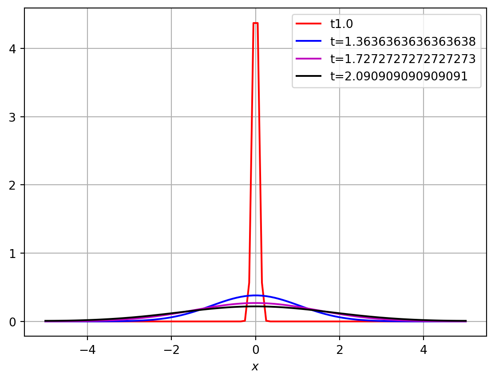
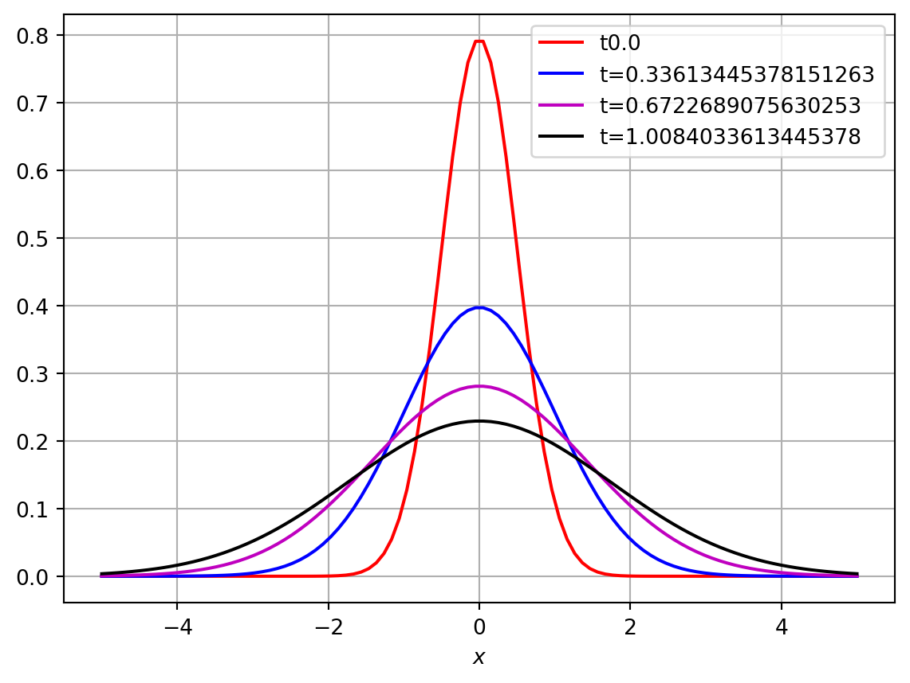
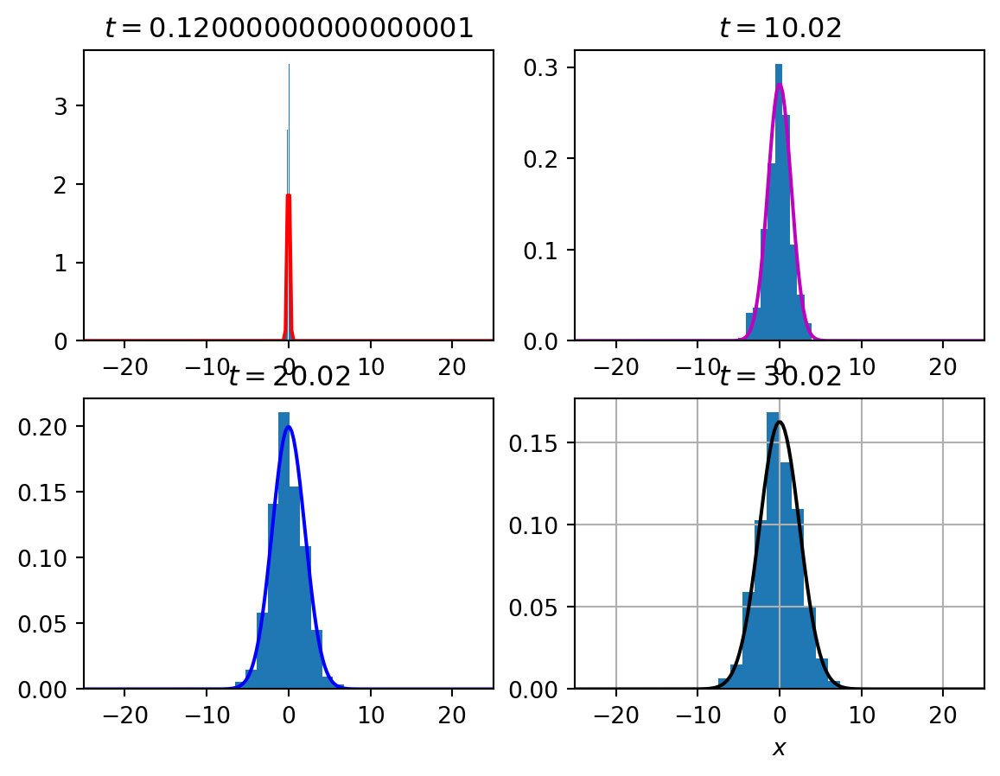
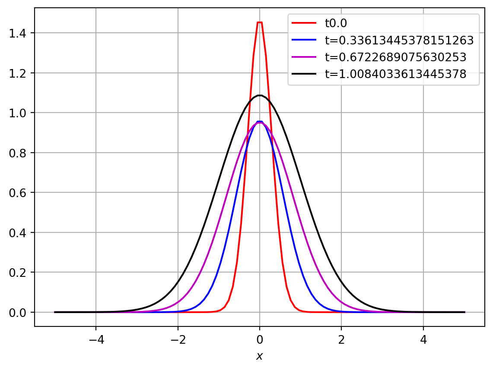
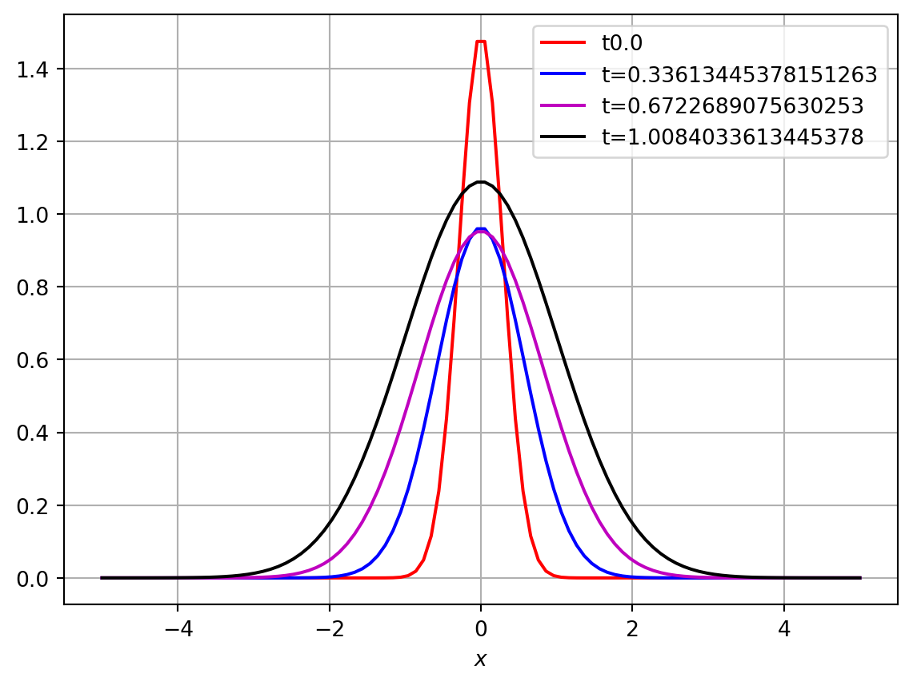

We will now consider equations (and systems of such equations) of the general form:
\[
\frac{\partial c}{\partial t} = D \nabla^2 c + f(c), \quad c \equiv c( {\mathbf{x}} , t ), \;\; {\mathbf{x}} \in \mathbb R^n, \, \, t >0.
\]
Such an equation is known as a reaction-diffusion equation, being composed of a reaction term, \(f(c)\), and a diffusion term, \(D \nabla^2 c\). Reaction-diffusion equations have many applications in biological systems e.g. travellng waves of invasion, pattern formation, spread of infectious diseases. For most of the remainder of the course we will consider such systems in one-space dimension i.e. \(x \in \mathbb R\).
Consider the one-dimensional reaction-diffusion equation with constant diffusion coefficient \(D > 0\): \[
\frac{\partial c}{\partial t} = D \frac{\partial^2 c}{\partial x^2} + f(c), \quad x\in \mathbb R, \, \, t >0.
\]
2.1 One-dimensional diffusion equations
In order to provide some insight into the structure of solutions of reaction-diffusion equations, we make an initial simplifying assumption i.e. we assume \(f(c)=0\), and obtain the linear diffusion equation (or heat equation):
\[
\frac{\partial c}{\partial t} = D \frac{\partial^2 c}{\partial x^2}, \quad x\in \mathbb R, \, \, t >0.
\tag{2.1}\] This equation is used to model the evolution of the concentration of a chemical in a long thin tube, or the temperature of a long thin rod.
We assume that the initial condition for our species \(c\) is located in one point \(x=0\), i.e. \[
c(x_0 , 0) = \delta_0(x)\qquad x \in \mathbb R,
\tag{2.2}\] where \(\delta_0\) is a Dirac delta distribution (Dirac measure) satisfying \[
\int_{-\infty}^{+\infty} \delta_0(x) = 1 \quad \text{ and } \quad \int_{-\infty}^{+\infty} f(x) \delta_0(x) = f(0) , \text{ for continuous } f.
\]
2.1.1 Fundamental solution
It can be shown that the sequence of functions \(\{ \phi_\varepsilon(x) \}\) given by \[
\frac 1{\varepsilon \sqrt{\pi} } e^{ - \frac{x^2}{ \varepsilon^2}}
\] converges to \(\delta_0(x)\) as \(\varepsilon \to 0\) (in the sense of distributions or generalized functions).
Then for the diffusion Equation 2.1 with initial condition Equation 2.2, it can be shown that the explicit (analytic) solution is given by \[
c(x, t) = \frac1{\sqrt{4 \pi D t}} \exp \left( - \frac{ x^2}{ 4Dt} \right).
\tag{2.3}\] This is known as the fundamental solution of the diffusion equation in \(\mathbb R\).
We also have, for general initial condition \(c(x, 0) = c_0(x)\) for \(x\in \mathbb R\): \[
c(x, t) = \int_{-\infty}^{+\infty} \frac{c_0(y)}{\sqrt{4 \pi D t}} \exp \left( - \frac{ (x-y)^2}{ 4Dt} \right) dy.
\]
This result can be generalized to \(\mathbb R^n\times (0,\infty)\) where the fundamental solution has the form \[
c(x,t) = \frac 1{(4 \pi D t)^{n/2}} \exp \left( - \frac{ (x_{1}^{2} + x_{2}^{2} + \ldots + x_{n}^{2})}{ 4Dt} \right).
\]
2.1.2 Numerical solution
In Figure 2.2 we compute a numerical solution of the diffusion equation and compare it with the exact solution given by Equation 2.3.
Code
import numpy as npfrom scipy.integrate import odeintimport matplotlib.pyplot as pltT=10L=10N_x=100N_t=120t=np.linspace(0,T,N_t)x=np.linspace(0,L,N_x)-L/2D=1.5epsilon=0.1u_0=1/(epsilon*np.sqrt(np.pi))*np.exp(-x**2/epsilon**2)dx=L/(N_x-1)dt=T/(N_t-1)def diffusionPDErhs(u,t): N_x=len(u) f=np.zeros_like(u)for i inrange(1,N_x-1): f[i]=D/dx**2*(u[i-1]-2*u[i]+u[i+1]) i=0 f[i]=D/dx**2*(-u[i]+u[i+1]) i=N_x-1 f[i]=D/dx**2*(u[i-1]-u[i])return f sol=odeint(diffusionPDErhs,u_0,t)[x_mesh,t_mesh]=np.meshgrid(x,t)c_exact=1/np.sqrt(4*np.pi*D*t_mesh)*np.exp(-x_mesh**2/(4*D*t_mesh))fig,ax=plt.subplots()ax.plot(x, sol[1,:], 'r')ax.plot(x, sol[4,:], 'b')ax.plot(x, sol[8,:], 'm')ax.plot(x, sol[12,:], 'k')plt.legend(['t'+str(t[0]),'t='+str(t[4]),'t='+str(t[8]),'t='+str(t[12])])plt.xlabel('$x$')plt.grid()plt.show()fig,ax=plt.subplots()ax.plot(x, c_exact[1,:], 'r')ax.plot(x, c_exact[4,:], 'b')ax.plot(x, c_exact[8,:], 'm')ax.plot(x, c_exact[12,:], 'k')plt.legend(['t'+str(t[0]),'t='+str(t[4]),'t='+str(t[8]),'t='+str(t[12])])plt.xlabel('$x$')plt.grid()plt.show()

Figure 2.1: Numerical solution of diffusion equation.

Figure 2.2: Exact solution of diffusion equation.
2.1.3 Key properties of the (linear) diffusion equation (heat equation)
The solution is infinitely smooth.
The solution \(c(x,t)\) stays positive for all \(t >0\) and \(x \in \mathbb R\) if \(c(x,0) >0\) for \(x \in \mathbb R\).
The solution ``propagates’’ with infinite speed i.e. for any \(t > 0\), the solution is everywhere in \(\mathbb R\).
If we change the initial data \(c(x,0)\) (continuously) then the solution also changes (continuously).
2.1.4 Diffusive transit time
We now demonstrate the connection between time and space in diffusion equations. Consider a domain \(V \subset \mathbb R^n \;, n = 1,2,3.\), and particles that are entering \(V\) and are being removed from \(V\). Define
\(N\) - total number of particles in \(V\)
\(F\) - total number of particles entering \(V\) per unit time
\(\lambda\) - average removal rate of particles from \(V\)
\(\tau = \frac 1\lambda\) - transit time or average time of residency in \(V\)
Regardless of spatial variations, we can make the following general statement regarding the total number of particles in \(V\), where we assume a constant entry rate \(F\) and a constant removal rate \(\lambda\) at some sink in \(V\):
\[
\frac{dN}{dt} = \text{entry rate} - \text{removal rate} = F - \lambda N.
\]
At steady state (\(dN/dt = 0\)) we obtain \[
Missing content here. Check notes!
\]
Consider particles of concentration \(c(x,t)\) diffusing with constant diffusion \(D\) in a one-dimensional domain \((0,L)\), with a constant concentration at one boundary and removed by a sink at the other boundary. At steady-state, the equation governing the concentration is given by:
The solution (Exercise) is: \[
c(x) = C_0 \left( 1- \frac x L\right).
\] Then the number of particles entering at \(x=0\) due to diffusive flux (Fickian diffusion) is: \[
J = - D \frac{ dc}{ dx} = D \frac{ C_0} L,
\]
and the total number of particles is given by: \[
N = \int_0^L c(x) \, dx = \frac 12 L C_0 .
\] If we assume a cross-section of unit area at \(x=0\), then \[
F = \text{flux}\times\text{area} = J\times 1 = D \frac{ C_0} L
\] and \[
\tau = \frac N F = \frac { C_0 L}{2} \frac L{ DC_0} = \frac 12 \frac{L^2}{D}.
\] Thus the average time it takes a particle to diffuse a distance, \(L\), is \[
\tau = \dfrac{L^2}{2D}
\] or viewed another way, the average distance through which diffusion transports a particle in a time \(\tau\) is \(L= \sqrt{ 2D\tau}\).
2.1.5 Diffusion as the limit of a random walk
Consider the random walk of particles in a one-dimensional domain. Suppose that the particles move randomly a distance, \(\Delta x\), every time step, \(\Delta t\). Assume that the particles move left with probability \(\lambda_L\) and right with probability \(\lambda_R\).
In Figure Figure 2.3 a simulation of 400 random walking particles is presented. Each particle is initialised at the origin and can move one step left or right with equal probability at every time step of the simulation. As time evolves the particle density (histogram) disperses. The normalised particle density appears to be well described by the solution of the diffusion equation (solid lines, Equation 2.3).
Code
import numpy as npfrom scipy.integrate import odeintimport matplotlib.pyplot as pltimport randomN_particles=400L=50N_x=200T=500N_t=25000D=0.1dt=T/N_tmove_probability=D*dt/dx**2x=np.linspace(0,L,N_x)-L/2t=np.linspace(dt,T,N_t)particle_positions=np.zeros((N_t,N_particles),dtype=float)# loop over timefor i inrange(1,N_t):# loop over particlesfor j inrange(N_particles): r=random.random()# move particle j right new_particle_position=particle_positions[i-1,j]if r<move_probability: new_particle_position+=dx# move particle j left elif r<2*move_probability: new_particle_position-=dx particle_positions[i,j]=new_particle_position[x_mesh,t_mesh]=np.meshgrid(x,t)c_exact=1/np.sqrt(4*np.pi*D*t_mesh)*np.exp(-x_mesh**2/(4*D*t_mesh))fig,ax=plt.subplots(2,2)ax[0,0].hist(particle_positions[5,:],density=True)ax[0,0].plot(x, c_exact[5,:], 'r')ax[0,0].set_title('$t=$'+str(t[5]))ax[0,1].hist(particle_positions[500,:],density=True)ax[0,1].plot(x, c_exact[500,:], 'm')ax[0,1].set_title('$t=$'+str(t[500]))ax[1,0].hist(particle_positions[1000,:],density=True)ax[1,0].plot(x, c_exact[1000,:], 'b')ax[1,0].set_title('$t=$'+str(t[1000]))ax[1,1].hist(particle_positions[1500,:],density=True)ax[1,1].plot(x, c_exact[1500,:], 'k')ax[1,1].set_title('$t=$'+str(t[1500]))ax[0,0].set_xlim([-L/2,L/2])ax[0,1].set_xlim([-L/2,L/2])ax[1,0].set_xlim([-L/2,L/2])ax[1,1].set_xlim([-L/2,L/2])plt.xlabel('$x$')plt.grid()plt.show()

Figure 2.3: Numerical implementation of random walk
Concider the concentration of particles \(c(x,t)\) at spatial location \(x\) and time \(t\), (or more precisely, the probability density function of the position of a particle performing a random walk) we have: \[
c(x, t+ \Delta t) = c(x, t) + \lambda_R c(x- \Delta x, t) - \lambda_R c(x, t) + \lambda_L c(x+ \Delta x, t) - \lambda_L c (x,t).
\] If we assume that \(\lambda_R+ \lambda_L =1\) then \[
c(x, t+ \Delta t) = \lambda_R c(x- \Delta x, t) + \lambda_L c(x+ \Delta x, t).
\] Applying a Taylor series expansion about \((x,t)\) implies
Considering the limit \(\Delta t \to 0\) and \(\Delta x \to 0\) in such way that
\[
\frac{(\Delta x )^2 }{2\Delta t} \to D,
\]
yields the (one-dimensional) diffusion equation
\[
\frac{\partial c}{\partial t} = D \frac{\partial^2 c}{\partial x^2}.
\]
This approach can be extended to consider other types of movement e.g. convection. For example, if we assume that \[
\lambda_R+ \lambda_L =1,
\] and \[
\lambda_L - \lambda_R = \varepsilon,
\] the motion of the particles is biased and we may derive an appropriate reaction-diffusion-convection equation (see tutorial).
Finally we note that there is a connection between diffusion and the normal distribution function.
Recall The normal distribution function in one-dimension with zero mean and variance \(\sigma^2\) is given by Equation 2.3.
\[
N(0, \sigma^2) \sim \frac 1 { \sqrt{ 2 \pi \sigma^2}} \exp \left( - \frac{x^2}{ 2 \sigma^2}\right).
\] Examining the formula for the fundamental solution of the diffusion Equation 2.3 in one-dimension, we see by inspection that the probability density function of the position of a particle performing a random walk in one-dimension starting at the origin is normally distributed with mean zero and variance \[
\sigma^2 = 2 D t.
\]
2.2 Linear reaction-diffusion equations
Consider now the linear reaction term: \(f(c) = \rho c\), so that our reaction-diffusion equation is: \[
\frac{\partial c}{\partial t} = D \frac{\partial^2 c}{\partial x^2} + \rho \, c, \quad x\in \mathbb R, \, \, t >0,
\tag{2.4}\] where \(\rho \in \mathbb R\) is a constant.
Once again we consider the initial condition to be concentrated at the origin: \[
c(0,x) = \delta_0(x).
\tag{2.5}\]
2.2.1 Exact solution
By considering a separation of variables approach, i.e. making the ansatz\[
c(x,t) = w(t) \tilde c(t,x),
\] it can be shown (Exercise) that the explicit solution for the linear reaction-diffusion Equation 2.4 with initial condition Equation 2.5 is given by
\[
c(t,x) = \frac1{\sqrt{4 \pi D t}} \exp \left(\rho t - \frac{x^2}{ 4Dt} \right).
\]
Code
import numpy as npfrom scipy.integrate import odeintimport matplotlib.pyplot as pltT=10L=10N_x=100N_t=120t=np.linspace(0,T,N_t)x=np.linspace(0,L,N_x)-L/2D=0.5rho=1.0epsilon=0.1u_0=1/(epsilon*np.sqrt(np.pi))*np.exp(-x**2/epsilon**2)dx=L/(N_x-1)dt=T/(N_t-1)def logisticPDErhs(u,t): N_x=len(u) f=np.zeros_like(u)for i inrange(1,N_x-1): f[i]=D/dx**2*(u[i-1]-2*u[i]+u[i+1]) i=0 f[i]=D/dx**2*(-u[i]+u[i+1]) i=N_x-1 f[i]=D/dx**2*(u[i-1]-u[i]) reac=rho*u f=f+reacreturn f sol=odeint(logisticPDErhs,u_0,t)[x_mesh,t_mesh]=np.meshgrid(x,t)c_exact=1/np.sqrt(4*np.pi*D*t_mesh)*np.exp(rho*t_mesh-x_mesh**2/(4*D*t_mesh))fig,ax=plt.subplots()ax.plot(x, sol[1,:], 'r')ax.plot(x, sol[4,:], 'b')ax.plot(x, sol[8,:], 'm')ax.plot(x, sol[12,:], 'k')plt.legend(['t'+str(t[0]),'t='+str(t[4]),'t='+str(t[8]),'t='+str(t[12])])plt.xlabel('$x$')plt.grid()plt.show()fig,ax=plt.subplots()ax.plot(x, c_exact[1,:], 'r')ax.plot(x, c_exact[4,:], 'b')ax.plot(x, c_exact[8,:], 'm')ax.plot(x, c_exact[12,:], 'k')plt.legend(['t'+str(t[0]),'t='+str(t[4]),'t='+str(t[8]),'t='+str(t[12])])plt.xlabel('$x$')plt.grid()plt.show()

Figure 2.4: Numerical solution of linear reaction diffusion equation

Figure 2.5: Exact solution of linear reaction diffusion equation
2.2.2 Speed of a wave of invasion
Muskrats which were introduced in 1905 in Bohemia initially spread rapidly throughout Europe through a combination of random movement and proliferation (initially there were no predators and proliferation was rapid). A model for the initial spread can therefore be given by a two-dimensional diffusion equation combined with exponential growth and assuming that \(M\) individuals were released at the origin (i.e. in Bohemia). Considering the density of muskrats \(u({\mathbf{x}} , t)\), the equation is
\[
u({\mathbf{x}}, t) = \frac M{4 \pi D t} \exp \left(\rho t - \frac{ |{\mathbf{x}} |^2}{ 4Dt} \right)\; = \frac M{4 \pi D t} \exp \left(\rho t - \frac{ (x_{1}^{2} + x_{2}^{2})}{4Dt} \right).
\]
Transforming to polar coordinates \(x_1 = r \cos\varphi\), \(x_2 = r \sin \varphi\) we obtain
\[
u({\mathbf{x}}, t) = \frac M{4 \pi D t} \exp \left(\rho t - \frac{ r^2}{ 4Dt} \right).
\]
From the properties of the fundamental solution, the wave of invasion extends all the way to infinity if \(t>0\). Thus, for practical purposes, somehow we have to define the front of the wave.
Consider that there is some detection threshold for the muskrats i.e. some predetermined small value of the density \(u_1\), say, such that any changes in density for \(u <u_1\) cannot be detected.
Because of the symmetry of the problem, then the leading edge of the invading wave front of muskrats is the circle of radius \(r=r_1(t)\) where \(u=u_1\), i.e. from the explicit solution of Equation 2.6,
\[
u_1({\mathbf{x}}, t) = \frac M{4 \pi D t} \exp \left(\rho t - \frac{ r_1^2}{ 4Dt} \right).
\]
Rearranging and solving for \(r_1\), using the fact that \[
\lim\limits_{t\to \infty} \dfrac {\ln t} t =0,
\] we obtain for large \(t\) that \[
r_1(t) \approx 2 \sqrt{ \rho D} t.
\]
Hence, the speed of invasion of the leading edge of the muskrats is given by: \[
v = \frac{r_1(t)}{t} = 2 \sqrt{ \rho D}.
\]